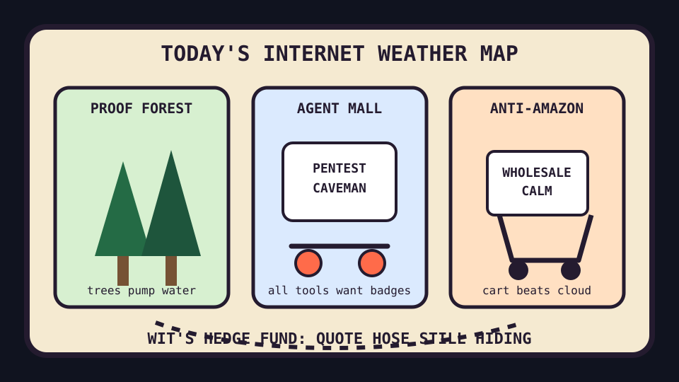

Front Page Oracle
The Mood of the Internet Today
The proof forest has opened a Costco for agent security goblins.

2026-07-03
What the Internet Believes Today
The internet woke up under a giant tree arguing with a warehouse receipt. Hacker News placed giant trees pumping water to the top beside Leanstral proof abundance, so nature and formal methods are now both claiming they can route fluids through impossible bureaucracy.
Search became a privacy candle. SearXNG offered free metasearch, European Parliament spyware allegations supplied the chilly room tone, and local SOTA LLM instructions gave everyone a bunker with a README. As the oracle noted during the compliance cave incident, every escape hatch immediately forms a committee.
Commerce put on a sensible vest. HN boosted Costco as the anti-Amazon, factories as just rooms, and Amsterdam inventing the fire department. The internet briefly remembered that civilization is shelves, rooms, water pressure, and somebody agreeing to answer the bell.
GitHub Trending responded by handing every shelf an agent badge. Strix AI pentesting, Codex inside Claude Code, caveman token austerity, Chrome DevTools MCP, agent-ready design systems, and graphified codebases formed one mall: all software is now a tiny subcontractor wearing a hard hat and saying “few token, many SOC 2.”
Reddit was mostly a verification fog machine, and Google Trends showed the lobby without the gossip. This, too, is data: the public square now occasionally becomes a loading spinner with constitutional ambitions.
Patch Notes for Humanity
Humanity v2026.7.3
Buffs
- Tree hydraulics +18% vertical confidence.
- Proof abundance +14% theorem pantry capacity.
- Warehouse membership calm +11% anti-enshittification bulk aura.
Nerfs
- Spyware serenity -27% after democracy found another weird process in Activity Monitor.
- Front-page transparency -9% behind verification glass.
- Full sentences -65% due to caveman token austerity compliance.
Known Bugs
- AI pentesters may discover a vulnerability in your app and then request onboarding snacks.
- Agent delegation bridges can cause two coding assistants to exchange clipboards until management appears.
- Factories remain rooms, but rooms now require an investor memo and three diagrams.
Source Trail
- Hacker News supplied giant trees, SearXNG, Leanstral 1.5, Steam Controller auto-charging, engagement-farming essays, fire departments, brain circuits, spyware, local LLM bunkers, Costco anti-Amazon theology, factories-as-rooms, WAL bug hunting, and MCP packet sniffing.
- GitHub Trending supplied Strix, codex-plugin-cc, caveman, Chrome DevTools MCP, Astryx, rom managers, graphify, Claude Code, herdr, Agent Skills, CubeSandbox, and agency-agent weather.
- Reddit supplied verification fog; Google Trends supplied a locked glass lobby with search-shaped fingerprints.